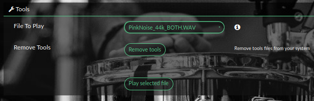
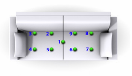
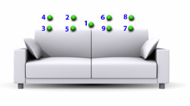
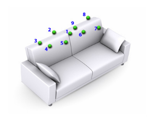

Making Measurment
Making measurements
A good measurement of the system and room characteristics is essential to get a good result for DRC. This guide will describe multiple ways to measure the system and generate FIR filters. One critical element of DRC is to understand how the room response changes depending on the positioning of the listener. It is possible to apply a very strong correction for a single listening position, but this will likely result in far worse accoustic properties in other listening positions. It is also possible to apply a more gentler correction based on measurements over an average of all listening positions.
Overall Process
There are several steps required and described over the following pages:
- Recording
- Playing a Sweep File in the listening position using the Tools in this plugin and record it with REW
- OR Playing a Sweep File multiple times in different positions using the Tools in this plugin and record it with REW, then averaging the result (see Note below)
- OR Playing Pink Noise using the Tools in this plugin while moving the microphone about the listening position (see Note below)
- Generating the filter
- Using REW's EQ tools to generate a correction filter and finetuning the result (with Rephase)
- OR Use the DRC-FIR filter creation in the plugin. (see Note below)
- OR Manually make your own filter in rephase.
- Using the filter in Volumio with the Brutefir plugin.
Note: The DRC-FIR filter plugin requires an impulse as an input. REW only generates impulse data for single point sweep measurements, not for average results or for pink noise measurements described in the MMM method below.
Tools in Volumio
To help to generate your filter, the plugin provides some tools for both single speaker measurement and stereo measurement.
- Sweep files - These wav file contain a 20Hz to 20000kHz signal plus a time reference signal on the right channel.
- Pink Noise files - Provide pink noise files.
Tools are not installed by default. If you need to install, press install tools in the plugin and wait the window to be refreshed. After the page is refreshed, you'll see new entries in the Tools section of the plugin.
Measurment
As said above the best results for a range of listening areas come from measuring in multiple places. We will describe a method called MMM - Moving Mic Measurment here. The idea is to make a multi point measurement and average them in real time. Read more about Moving Microphone Measurement method (implemented via RTA in REW) here : MMM.
MMM (or RTA as called in REW) is reliable up to approxiamtely 600Hz, and that is the range where most of the room-mode related problems are.
For the frequencies above 600Hz you should use single point (at your listening position) time gated sweep measurements.
Measurment points are defined like in the pictures below. This avoids having a single optimized listening point:
  Let's go! - Setup REW:
-
Plug your Microphone on your computer, and place it in your listening position. The placement is important, and you're advised to read some online guides.
-
Launch REW (Roomeqwizard)
-
Before measuring can start, some options need to be configured as below:
- Configure mic calibration as below (measurement microphones often come with calibration curves which can be obtained from the vendor):
- Then, adjust parameters for input and output. Ensure the sampling rate selected matches the sampling rate of the file you will play in Tools (BruteFIR ships with 44kHz files)
MMM measurement using Pink Noise files:
- In REW, click on RTA icon, it will open a new window. Then click on the gear (right top) and set the following parameters:
- When ready, in the plugin under Tools select
Pink_Noise_44k_##.WAV(L, R, or LR depending on the measurement) and click onPlay selected file. Pink noise should start to play. - In REW, press the red record button (top right)
- Move your microphone following the MMM scheme described above.
- Tip: Try to move your microphone between points at a consistent speed. REW is preforming the averageing of measurements in realtime and leaving the microphone in any single position for a different length of time will result in an under/over correction in that position. Also do not stand between the microphone and the speaker while making measurements as your body will affect the accoustics.
- These are measurement points as suggested by DiracLive. You can use them as your MMM points - start from central position, move slowly with constant speed (app 20cm/sec) toward next positions as if you were to draw a line between them. Finish back at the central position.
- Click the save icon to Save the current data as new measurement.
- If you are doing separate L and R measurements repeate the previous 5 steps for the other channel.
- For all your measurements click
Graphand set smoothing to1/12 Smoothing
Single point measurement using Sweep files:
- In REW click on Measure and set the following parameters :
- It is important to ensure the paramters match those of the sweep file, especially length, and sample rate.
- Check that
Use Accoustic Timing Refernceis selected as otherwise REW will not know when we start the sweep.
- Since we are using the accoustic timing reference from Volumio we need to Mute the PC sound. Otherwise when the measurements are started the PC will play its own accoustic timing reference.
- Click
Start. Wait for the status messageWaiting for time reference - When ready, in the plugin under Tools select
512kMeasSweep_30_to_20000_44k_PCM16_R_ref##.WAV(L, R, or LR depending on the measurement) and click onPlay selected file. The accoustic timing reference should play followed by a frequency sweep. - If you are doing separate L and R measurements repeat the previous 4 steps for the other channel.
- For all your measurements click
Graphand set the smoothing to1/48 Smoothing
Multi-point average measurement using Sweep files:
- Repeat the instructions above for
Single point measurement using Swwp filesfor each of your listening positions, or for all of the points in described in the MMM graphics above.- Note: If you are doing separate L and R measurements ensure you do L and R before moving the microphone to the next position. It is a good idea to name all the Sweeps you are making.
- After you have completed all measurements select
All SPLabove the graph. - Tick all the measurements you want to average on the bottom of the screen (select L and R measurements separately if making separate filters)
- Click
Average the Responses.
Exporting data for next step.
How to export will depend on how measurements were made and how the FIR filter will be created. Repeat the following steps for Left and Right channels, or just once for Stereo measurements.
Automatic filter creation using DRC-FIR - and Single Point Sweep measurements
If you are working with single point measurements using sweeps it is possible to export an Impulse response of the sweep. This impulse response can be used in DRC-FIR in the plugin to automatically generate a DRC filter and is described on the next page.
- Choose
File > Export > Export impulse response as wav- this option will be greyed out for Averages and RTA Measurements. - Ensure the output format is 32bit, mono, and Normalised.
Filter creation using REW/Rephase
When using Rephase either manually or to tweak REW's output to see the change in your response you need to export this measurement:
- Choose
File > Export > Export measurement as text